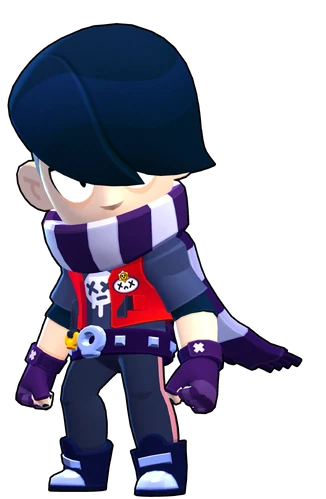
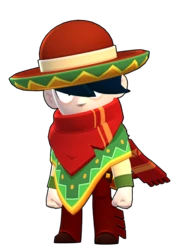
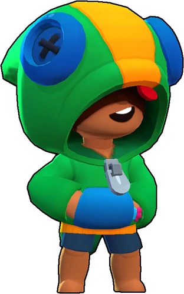
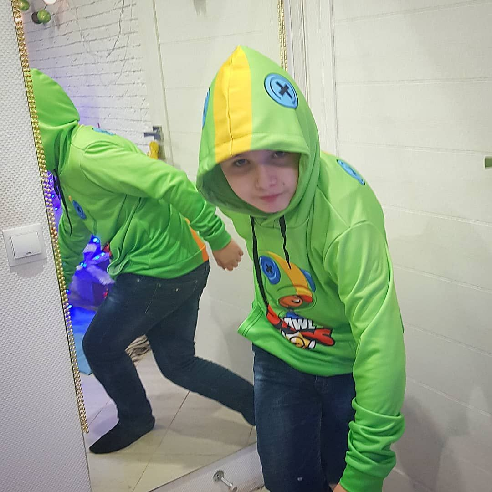
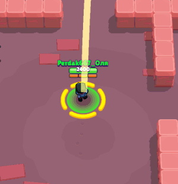
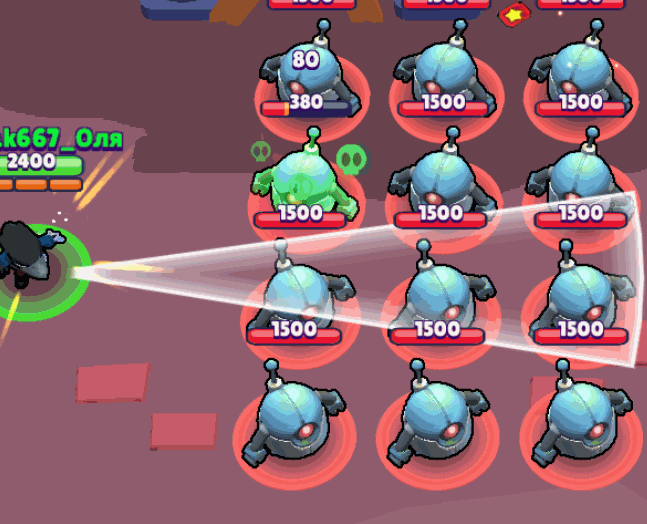

brawlstars
Цель игрока — продвигаться по игровой трофейной дороге, участвовать в боях с другими игроками, а также открывать и улучшать новых игровых персонажей с уникальными способностями и характеристиками.
Геймплей игры сосредоточен на том, чтобы в одиночку, командой из двоих человек или в кооперативе из троих или пяти человек победить команду других игроков, или противника под руководством ИИ, в разнообразных игровых режимах. Игроки могут выбрать персонажей, каждый из которых имеет свои навыки и суперспособность. Также, каждый из персонажей имеет свои звёздные силы и гаджеты, которые можно получить, открыв ящик в игре или приобрести в магазине.
В мае 2020 года в одном из обновлений игры была добавлена новая система наград под названием Brawl Pass. Когда игроки участвуют в сражениях, они зарабатывают жетоны — игровую валюту, используемую для разблокировки уровней наград. Игроки могут получать ящики, кристаллы, скины, значки (эмодзи, которые можно использовать во время баталий или в комнате командной игры), монеты, очки силы, спреи (специальные рисунки, которые можно оставлять на земле на поле боя) и бойцов. Существует два типа Brawl Pass: бесплатный и премиум, приобретаемый за кристаллы[3].
Режимы игры
Захват кристаллов (англ. Gem Grab) — режим 3 на 3 игрока, где нужно собирать кристаллы, которые появляются каждые 7 секунд из шахты. При убийстве противника игроком, все кристаллы противника выпадают на землю и могут быть подобраны любым другим игроком. Индикаторы обеих команд отображают сумму кристаллов, имеющихся у всех их участников на данный момент. Задача каждой команды — собрать 10 или больше кристаллов, после чего продержать их у себя до конца игры. Когда одна команда соберёт 10 кристаллов, начнётся отсчёт до конца игры. Этот отсчёт можно прервать, если отобрать у вражеской команды нужную часть кристаллов, убивая её участников, либо же собрав равное с вражеской командой количество кристаллов. По прошествии отведённых до конца 15 секунд победа присуждается команде с наибольшим количеством кристаллов[4][5][6].
Столкновение (англ. Showdown) — режим в жанре Королевской Битвы, не имеющий временных ограничений. Есть 2 типа режима — одиночное и парное. В одиночном столкновении побеждает последний выживший среди 10 игроков, а в парном — последняя выжившая команда из 2-х игроков среди 5 команд (тоже по 2 игрока). По карте разбросаны коробки с кубиками усиления, которые повышают здоровье и урон игрока, а также со временем карта будет сужаться к центру ядовитыми облаками, наносящими возрастающий урон игрокам каждую секунду[4][5][6].
Броулбол (англ. Brawlball) — режим 3 на 3 игрока, где главная задача — забить 2 гола в ворота противников, управляя для этого специальным мячом. Если не было забито второго гола, то побеждает команда с большим счётом. Если счёт равный, то игрокам даётся 1 минута для забивания гола, однако препятствия на карте будут разрушены. Если за дополнительное время ни одна команда не сможет забить гол, то игрокам присваивается ничья.
Также есть две пары попеременно чередующихся между собой режимов:
Ограбление (англ. Heist) — режим 3 на 3 игрока, где главная задача — уничтожить сейф врагов, защищая собственный. Если с течением времени один из сейфов не будет уничтожен, то побеждает та команда, у которой здоровье сейфа выше вражеского. Если по прошествии времени обоим сейфам был нанесён одинаковый урон в процентах, то игрокам присваивается ничья[6].
Горячая зона (англ. Hot Zone) — режим 3 на 3 игрока, где главная задача — как можно больше времени стоять на точке, тем самым захватывая её. Побеждает та команда, которая набрала 100 %, путём захвата всех, либо одной точек.
Награда за поимку (англ. Bounty) — режим 3 на 3 игрока, где главная задача — заработать как можно больше звёзд, чем у противников. Звёзды зарабатываются путём убийства противника. В начале игры в центре карты есть дополнительная звезда. Когда один из игроков убивает другого, то к счёту игрока добавляется звезда. Количество заработанных звёзд определяет награду за убийство игрока, после которого количество звёзд обнуляется[6].
Осада (англ. Siege, удалён из игры 31 августа 2022 года) — режим 3 на 3 игрока, где главная задача — уничтожить базу противника. Отличие этого режима от «Ограбления» проявляется в возможности базы самостоятельно обороняться от противников, которые находятся в зоне её действия. С начала игры в центре карты появляются болты. Команда, собравшая больше болтов за отведённое время, сможет призвать себе на помощь робота, который идёт к вражеской базе, попутно сражаясь с противниками. Чем больше болтов соберёт команда, тем сильнее робот.
Нокаут (англ. Knockout) — режим 3 на 3 игрока, где главная задача — победить в двух раундах, каждый из которых длится максимум по 1 минуте. Та команда, в которой не осталось игроков или осталось меньше, чем в противоположной проигрывает, если же по истечении времени игроков одинаково в обеих командах, раунд выигрывает та команда, которая нанесла больше урона.
Дуэли (англ. Duels) — в данном режиме игроки выбирают по 3 бойца, за которых будут сражаться друг с другом. Выигрывает тот игрок, который победил трёх бойцов противника.
Погрузка (англ. Payload) — режим, в котором у каждой команды есть один полезный груз, который они должны довести до конца рельсов. Выигрывает та команда, которая дотолкает свой груз до финальной цели.
Зачистка (англ. Wipeout) — в данном режиме участвуют две команды, состоящие из трёх игроков каждая. Цель — уничтожить противников 8 раз, не дав противнику сделать то же самое. Когда одна команда совершает 8 убийств, она побеждает. По истечении 2 минут, если обе команды не смогли уничтожить 8 противников, побеждает та команда, у которой больше убийств. Если у обеих команд одинаковое количество убийств, матч заканчивается вничью.
Баскетбой (англ. BasketBrawl) — режим 3 на 3, в котором надо попасть мячом в кольцо, которое постоянно двигается. В этом режиме самые маленькие карты в игре. Играют в этом режиме до 5 очков. За попадание за линией — 3 очка, после линии — 2 очка.
Дополнительно существует режимы, которые появляются по выходным:
которые включены в сезонный пропуск Brawl Pass.
инфу взял здесь



Редкость
Эпический
Скорость передвижения
820 (Очень высокая);
1020 (после Супера)
Голос озвучки
Скотт Уильям
Здоровье
Уровень Здоровье
1 2800
2 2940
3 3080
4 3220
5 3360
6 3500
7 3640
8 3780
9 3920
10 4060
11 4200
Атака
Радиус
2,33
(Маленький)
Перезарядка
0,6 сек
(Очень высокая)
Пуль за атаку
2
Уровень Урон
1 540
2 567
3 594
4 621
5 648
6 675
7 702
8 729
9 756
10 783
11 810
Супер
Радиус
8,33
Длительность
2
Скорость передвижения
3500
Attack icon.png1000 (С первой Звёздной силой)
Edgar Portrait.png
Эдгар (англ. Edgar) — эпический боец класса «Убийца». Его можно получить из любого ящика, а также из подарка к 2021 году и последним подарком для новых игроков 2022 года.
“Вау... хардкор!Эдгар Pin-GG.png”
― Эдгар (реплика).
Содержание
1 Внешний вид
2 Общее
3 Основные атаки
3.1 Атака: Бойцовский клуб
3.2 Супер: Прыжок
4 Усиления
4.1 Звёздная сила: Жесткая посадка
4.2 Звёздная сила: Кулачный бой
4.3 Гаджет: Летим!
4.4 Гаджет: Крепкий oрешек
5 Особенность
6 Советы использования
7 Комбинации способностей
8 Скины
9 Значки
10 Спреи бойца и скинов
11 Реплики
12 Интересные факты
12.1 Личные данные
12.2 Геймплей
12.3 Скины внешность
12.3.1 Молниеносный Эдгар
12.3.2 Орочи Эдгар
12.3.3 Доктор Эдгар
12.4 Баги и ошибки
13 История изменений
14 Анимации
15 Особые эффекты
15.1 Особые эффекты атаки:
16 Концепт-арты
17 Предыдущее описание:
Внешний вид
Эдгар является одним из немногочисленных персонажей с большим количеством декоративных элементов на одежде. Во-первых, облик Эдгара выделяется особенным андеркатом, который сохраняет чёлку, частично скрывающую глаза и незначительную часть лица (волосы проносятся по левую сторону, «играясь маскированием» лба). Также заметен черный лак на ногтях; руки защищены фиолетовыми перчатками без пальцев, на проксимальных межфаланговых суставах и, вдобавок, учитывая большие пальцы, на суставах пястно-фаланговых нанесены горизонтальные полосы. Держатся перчатки на ремнях-липучках с изображением латинской буквы «X». Во-вторых, штаны с отделкой светло-розового канта, которые сочетаются с тёмными кроссовками (или иным видом обуви, напоминающий ботинки). Язычки кроссовок, доходящие до носков, осветлены. Передок осветлён аналогично, однако дизайнерский приём выполнен под горизонтальную линию. В-третьих, его пояс дополняет дерзкий образ — эта деталь, носимая на талии, гармонирует с впечатанными заклепками, формами похожими на «укороченные» замбийские изумруды. Серебряная пряжка с дыркой, скорее всего, отсылает к иконке самой «Brawl Stars»; правее находится еще одна такая, но меньше размером и золотая, укрепленная, предположительно, очень маленьким ремнем, восходящая над «черепком». В-четвёртых, торс прикрыт красной жилеткой с короткими серыми рукавами; с левой стороны, вместо обыденного нагрудного кармана, нарисован сплюснутый с полюсов овальный смайлик с грустной эмоцией, над ней виднеется альтернативная иконка с улыбающимся миловидным лицом, под «овальным смайликом» заметен ремень с серым квадратным концом, разъединенный на две части. Под жилеткой Эдгар носит серую футболку с логотипом "Бэд Рэндомс", изображающий очередного грустного персонажа, «стекающего» по принципу зарисовок граффити. Шея прикрыта шарфом в белую и фиолетовую вертикальные полоски, закрывая рот полностью. Шарф носит исключительно боевой характер, поэтому он способен принимать вид грозных кулаков и идти в наступление под контролем носителя.
Общее
Эдгар — боец со средне-низким здоровьем, с очень высокой скоростью перезарядки и скоростью передвижения. Дальность атаки мала, но урон неплохой, а также Эдгар способен исцеляться при атаке (35% от нанесенного урона (60% с Звёздной силой «Кулачный бой»). Супер накапливается автоматически (по аналогии с механикой Дэррила). С помощью него Эдгар прыгает через препятствия, ускоряясь (нанося при приземлении урон по области, если имеется Звёздная сила «Жесткая посадка»). Первый Гаджет копит Супер быстрее, а со вторым Эдгар получает щит, поглощающий урон на некоторое время.
Attack icon.pngНАПАДЕНИЕ
5
Health icon.pngЗАЩИТА
3
Usibility icon.pngПРАКТИЧНОСТЬ
1
Основные атаки
Атака: Бойцовский клуб
«Эдгар обрушивает на врага град ударов. Каждый достигший цели удар лечит его самого.»
Атака Эдгара — два быстрых последовательных удара шарфом. Попадая по цели, он исцеляет самого себя. Лечение составляет 35% нанесенного урона, а со второй звёздной силой — 44%. Высокий урон, очень быстрая перезарядка, высокая скорость атаки и исцеление делают Эдгара идеальным для нападения.
Супер: Прыжок
«Эдгар перепрыгивает препятствие и получает временное ускорение. Его Супер медленно заряжается со временем.»
При активации Супера Эдгар прыгает на небольшое расстояние и немного ускоряется. Его Супер, как и Супер Дэррила, заряжается автоматически за 30 секунд.
Усиления
Жесткая посадка.png Звёздная сила: Жесткая посадка
«Супер Эдгара наносит 1000 ед. урона всем врагам поблизости при приземлении.»
Эта способность позволяет Эдгару наносить Attack icon.png1000 урона при посадке после использования Супера. С ней можно быстрее добить врага.
Кулачный бой.png Звёздная сила: Кулачный бой
«Нанося урон противнику, Эдгар восстанавливает на 25% больше здоровья.»
С этой Звёздной силой Эдгар может восстанавливать на четверть больше здоровья (с 35% от нанесённого урона до 60%), что повышает шанс его выживаемости.
Edgar gd1.png Гаджет: Летим!
«Супер Эдгара заряжается на 525% быстрее в течение 4 секунд. Зарядов на матч: 3.»
Супер Эдгара заряжается намного быстрее в течении короткого времени. Способность можно использовать для побега или для добивания убегающего противника. Будет очень хорошо сочетаться со звёздной силой «Жесткая посадка».
Крепкий орешек.png Гаджет: Крепкий oрешек
«Эдгар получает щит, защищающий его от 2000 ед. последующего урона. Щит слабеет с течением времени. Зарядов на матч: 3.»
Эдгар получает щит, который защищает его от Health icon.png2000 последующих очков урона. Щит слабеет, теряя по 100 очков за 0,5 секунды. Если активировать гаджет до того, как предыдущий истечёт, то щит начнётся заново с Health icon.png2000. Будет полезно использовать, когда нужно победить врага, у которого преимущество по наносимому урону.
ВторойГаджетЭдгараВДейсвтии.png — Значок гаджета «Крепкий орешек» рядом с никнеймом игрока.
Super gradual auto charge.png Особенность
«Этот боец заряжает Супер с течением времени.»
Эдгар заряжает Супер автоматически в течение 30 секунд.
Советы использования
У Эдгара самая маленькая дальность атаки в игре, поэтому не стоит брать его на открытые карты, а также лезть на врагов, чья дальность куда больше, чем ваша.
Важная деталь в игре за Эдгара — это его Супер. Постарайтесь накопить его как можно быстрее, а потом использовать его на врага, которого вы сможете победить.
Также Супер Эдгара можно использовать для побега, если на вас неожиданно напали из кустов или для того, чтобы увернуться от атаки.
Эдгар очень хорошо подходит в такие режимы, как Похитители трофеев , Броулбол, Столкновение, но его не стоит брать в режимы, где надо наносить огромный урон, такие как Осада.
В Столкновении с модификатором "Злой робот" и Осаде не стоит увлекаться атакой робота, так как у Эдгара низкие показатели здоровья и дальности, а исцеляться от атаки особых объектов он не может (ящики с кубами силы, роботы, сейфы, турель осады и т. д., исключением является робот в Бою с боссом).
Атака Эдгара проходит через все объекты, кроме стен. Поэтому в Столкновении стоит начать с ящиков, которые находятся вместе. Эту функцию также можно использовать, если вы нападаете на нескольких врагов сразу.


«Леон поражает цель роем метательных клинков. Его Супер — дымовая бомба, делающая его невидимым на некоторое время.»
Леон
Редкость
Легендарный
Скорость передвижения
820 (Очень высокая);
1070 (При Звёздной силе «След дыма»)
Голос озвучки
Томас Хагена
Здоровье
Уровень Здоровье
1 3200
2 3360
3 3520
4 3680
5 3840
6 4000
7 4160
8 4320
9 4480
10 4640
11 4800
Атака
Радиус
9,87
Перезарядка
1,7 сек (Нормальная)
Пуль за атаку
4
Уровень Урон
1 480
2 504
3 528
4 552
5 576
6 600
7 624
8 648
9 672
10 696
11 720
Супер
Длительность
6 сек
Leon Portrait.png
Леон (англ. Leon) — легендарный боец класса «Убийца» (раньше «Скрытный убийца»). Его можно получить из ящиков, а также он довольно редко продаётся в магазине.
“Время драки!”
― Леон (реплика).
Содержание
1 Внешний вид
2 Общее
3 Основные атаки
3.1 Атака: Крутящиеся лезвия
3.2 Супер: Дымовая бомба
4 Усиления
4.1 Звёздная сила: След дыма
4.2 Звёздная сила: Тайное лекарство
4.3 Гаджет: Клонирование
4.4 Гаджет: Упавший леденец
5 Советы использования
5.1 Общие
5.2 Конкретные режимы
6 Комбинация способностей
7 Статистика побед
8 Реплики
9 История изменений
10 Интересные факты
10.1 Личные данные
10.2 Скины, внешность
10.3 Геймплей
10.4 Баги и ошибки
11 Скины
12 Анимации
13 Концепт арты
14 Значки
Внешний вид
Облик Леона заметно выделяется на фоне остальных персонажей. Дизайн зеленой толстовки напоминает хамелеона. Отдельно от приподнятой затылочной областью капюшона на макушке нанесена непродолжительная желтая линия. По бокам этой черты расположены массивные голубые пуговицы, сшитые крестиком черными нитками, подражающие глазам. Низ облачения обведен желтым контуром. Со спины на уровне пояса наблюдается декоративный толстый хвост, постепенно сужающийся к концу. На нем синеватые брюки особого покроя, которые плотно охватывают икры ног ниже колен. Ходит босиком. Сплошной накладной карман того же цвета, что и пуговицы. Также внутри капюшона присутствует еще один элемент декора — кусочек свисающей красной ткани, являющийся «языком» пресмыкающегося, и, в какой-то степени, ошибочно чем-то напоминающий на челку. Вдобавок, выделяется серебряная застежка — на толстовке нет молнии, поэтому, возможно, она больше является дополнительным украшением. Неестественная тень, падающая ему на глаза, частично скрывает лицо.
Общее
Леон имеет очень высокую скорость передвижения и низкое здоровье. Своей обычной атакой он бросает 4 лезвия на очень большую дистанцию. Урон варьируется в зависимости от того, как далеко летят его сюрикены (чем ближе цель, тем больше урон). Используя свой Супер, Леон становится невидимым для противников в течении 6 секунд. Один из его Гаджетов создаёт двойника, который бежит к ближайшему врагу, отвлекая его. Клон не может атаковать и ему наносится в два раза больше урона. Второй Гаджет Леона создаёт леденец, возле которого все игроки команды становятся невидимыми. Звёздная сила «След дыма» ускоряет его при Супере, а «Тайное лекарство» тоже при Супере Леону восстанавливает Health icon.png1000 очков здоровья в секунду.
Attack icon.pngНАПАДЕНИЕ
4
Health icon.pngЗАЩИТА
2
Usibility icon.pngПРАКТИЧНОСТЬ
3
Основные атаки
Атака: Крутящиеся лезвия
«Лёгким движением руки, Леон отправляет вперёд четыре крутящихся лезвия. Чем дальше они летят, тем ниже урон.»
Леон - Атака.gif
Леон бросает 4 крутящихся сюрикена по горизонтали и на высокую дистанцию. Чем ближе цель, тем выше урон от атаки и наоборот. Траектория лезвий может зависеть от движения Леона.
Супер: Дымовая бомба
«Леон может на 6 с. стать невидимым, но, атаковав, он выдаст себя. Если враги подойдут к Леону слишком близко, то смогут его заметить.»
Леон - Супер.gif
Леон становится невидимым на 6 секунд. Вражеские бойцы могут заметить его, только если они находятся в пределах 4 клеток от него. Стоит отметить, что даже медведь Ниты, турель Джесси, мортира Пенни, тень Тары, голова Тика и роботы не смогут найти его (если, конечно, игрок не находится достаточно близко к ним). Действие можно остановить, атаковав.
Усиления
1563303973558.png Звёздная сила: След дыма
«Активировав Супер, Леон движется на 30% быстрее, пока действует его невидимость.»
Во время невидимости Леон будет передвигаться на 30% быстрее обычного, что может помочь ему убежать или наоборот, сблизиться с врагом. Скорость Леона во время невидимости при использовании этой Звёздной силы возрастает до 1070 единиц!
1563303361294.png Звёздная сила: Тайное лекарство
«Леон восстанавливает 1000 очков здоровья в секунду, пока действует его Супер.»
Во время действия Супера, Леон будет восстанавливать себе Health icon.png1000 очков здоровья в секунду, что может помочь в бою с кем-либо. Всего может восстановить Health icon.png6000 здоровья при полном использовании Супера. Также можно использовать Супер в Столкновении. Благодаря восстановлению, Леон сможет свободно ходить в ядовитых облаках, пускай и будет видим другим игрокам.
Leon gd1.png Гаджет: Клонирование
«Леон создаёт своего двойника, сбивая врагов с толку. Зарядов на матч: 3»
Леон создаёт идентичного себе клона, который преследует врагов без возможности атаковать, при этом, получая в два раза больше урона от атак противников. По этому свойству можно понять, идёт за вами клон или же настоящий Леон. Через некоторое время он самоуничтожается.
Раньше клон Леона умирал за один любой удар (то есть, имел Health icon.png1 очко здоровья), но потом разработчики изменили его и теперь клон имеет столько же здоровья, сколько имел настоящий Леон в момент создания клона, но, при этом, он получает удвоенный урон от всех атак..
Упавший леденец.png Гаджет: Упавший леденец
«Леон создаёт для своей команды скрытую область, в которой можно спрятаться. Запас здоровья области постепенно убывает. Зарядов на матч: 3»
Леон ставит леденец, вокруг которого есть область — в ней все игроки из команды становятся невидимыми. Леденец имеет Health icon.png1500 здоровья, но оно постепенно убывает. Полезен во всех режимах, особенно с напарником/напарниками.
Советы использования
Общие
Во время своей невидимости Леон может одолеть кого-то, кто наносит огромный урон, просто атаковав его настолько быстро, что враг не сможет успеть использовать свой второй или третий выстрел (не принимая в счёт таких бойцов, как Булл — помимо высокого урона он имеет ещё и большой показатель здоровья).
Когда Леон только использует Супер, на первую долю секунды другим игрокам видно, в какую сторону он направляется. Из-за этого стоит делать обманки — сначала якобы идти в одну сторону, а потом свернуть в другую.
Фрэнк для Леона — вполне лёгкая добыча. Пока он размахивается своим молотом, можно обойти его и нанести огромный урон!
Под Супером со Звёздной силой «След дыма», Леон начинает бегать быстрее, за счёт чего он может появляться в самых неожиданных для оппонентов местах, что делает его ещё более опасным соперником.
Гаджеты Леона помогут отбить супер противника или заманить его в ловушку. Не используйте Гаджеты у всех на виду. Первый Гаджет лучше используйте в кустах или используя Супер.
Лучше не использовать Супер Леона, когда он под отравлением Ворона или Байрона. Как только он использует Супер под отравлением, его невидимость спадёт из-за наносимого урона ядом. А также Супер Леона лучше всего оставить на запас. Так как могут найтись бойцы с малым количеством здоровья, такие как Тик, Барли, Динамайк, Ворон, Спайк или бойцы, которые слабы вблизи, например Эмз, Пайпер.
Первый Гаджет лучше использовать, чтобы искать врагов, так как клон Леона видит даже тех врагов, которые сидят в кустах.
Конкретные режимы
Если вы играете в режиме Осада и использовали Супер, робот и база всё равно будут видеть вас и начнут атаковать.
В Одиночном столкновении будьте осторожны, так как попадание в засаду почти наверняка убьёт героя. Сосредоточьтесь на сборе кубиков усилений. В Парном столкновении пропускайте вперёд более сильных партнёров по команде, например, Шелли.
Комбинация способностей
1563303973558.png + Клон Проджектор.png: Можно будет поставить клона, а самому быстро убежать или подбежать к врагу с помощью Супера. Особенно эффективно будет против бойцов, которым сложно попасть в цель напрямую (как пример — метатели). Так можно будет неожиданно атаковать, либо незаметно уйти.
1563303361294.png + Клон Проджектор.png: Это уже будет полезно, если срочно нужно убежать. Можно будет застать врага в ступор, а самому незаметно сбежать и исцелиться.
1563303973558.png + СнаряжениеЛечение1УР.png: Данная комбинация почти полностью заменяет вторую Звёздную силу "Тайное лекарство". Пока вы будете в невидимости, вы вероятнее всего уже восстановите здоровье путём снаряжения на лечение. Хоть это будет не так эффективно как со Звёздной силой, но это вполне компенсируется дополнительной скоростью.
Статистика побед
Одиночное столкновение — 52,8%;
Захват кристаллов — 50,7%;
Броулбол - 49,2%;
Награда за поимку - 47,0%;
Горячая зона — 46,5%.
Ограбление — 45,4%;
Парное столкновение — 42,6%;
Из этого можно понять, что для Леона лучший режим — это Одиночное столкновение, худший — Парное столкновение


Ворон
212
ПОСМОТРЕТЬ КОД
«Это таинственное существо возникло в городе словно из ниоткуда. Никто не смеет дразнить его. Уже никто.»
Ворон
Редкость
Легендарный
Скорость передвижения
820
(Очень высокая)
Голос озвучки
Неизвестно
Здоровье
Уровень Здоровье
1 2400
2 2520
3 2640
4 2760
5 2880
6 3000
7 3120
8 3240
9 3360
10 3480
11 3600
Атака
Радиус
8,33
Перезарядка
1,3 сек (Высокая)
Пуль за атаку
3
Уровень Урон
1 320
2 336
3 352
4 368
5 384
6 400
7 416
8 432
9 448
10 464
11 480
Супер
Пуль за супер
28 (14 в начале и 14 в конце)Длительность Супера=Моментальная
Скорость передвижения
3000
Уровень
1 320
2 336
3 352
4 368
5 384
6 400
7 416
8 432
9 448
10 464
11 480
Ворон Portrait.png
Ворон (англ. Crow) — легендарный боец класса «Убийца» (ранее «Убийца с ядом»). Его можно получить из любого ящика.
“Давай уладим дела!Ворон Pin-GG.png”
― Ворон (реплика).
Содержание
1 Общее
2 Основные атаки
2.1 Атака: Клинки
2.2 Супер: Налёт
3 Усиления
3.1 Звёздная сила: Смертельный яд
3.2 Звёздная сила: Стервятник
3.3 Гаджет: Усилитель защиты
3.4 Гаджет: Замедляющий токсин
4 Советы использования
4.1 Общие
4.2 Для конкретных режимов
5 Комбинации способностей
6 Скины
7 Значки
8 Реплики
9 Интересные факты
9.1 Личные данные
9.2 Геймплей
9.3 Скины
9.3.1 Белый Ворон
9.3.2 Ворон-Феникс
9.3.3 Ворон-Меха
9.4 Баги и ошибки
9.5 Прочее
10 История изменений
11 Предыдущие модели
12 Анимации
13 Портреты
14 Концепт-арты
15 Официальные обои
16 Предыдущее описание
Общее
Ворон имеет средний урон, очень низкое здоровье, высокую скорость перезарядки и очень высокую скорость передвижения. Атакой Ворон бросает три ядовитых клинка, не давая восстанавливать здоровье противнику при помощи их яда. Его Супер — прыжок (взлёт), который оставляет за собой много кинжалов по круглой области (при взлёте и приземлении). Гаджет «Усилитель защиты» даёт Ворону щит на короткое время, а «Замедляющий токсин» может замедлять тех врагов, которых он отравил. Звёздная сила «Смертельный яд» уменьшает урон отравленных им врагов, а «Стервятник» позволяет Ворону наносить больше урона тем врагам, у которых осталось менее половины здоровья.
Attack icon.pngНАПАДЕНИЕ
5
Health icon.pngЗАЩИТА
1
Usibility icon.pngПРАКТИЧНОСТЬ
3
Основные атаки
Атака: Клинки
«Ворон бросает три кинжала. Враги, задетые отравленными кинжалами, постепенно теряют здоровье, а любой действующий на них лечебный эффект уменьшается.»
Ворон - Атака.gif
Ворон метает три ядовитых кинжала, которые наносят основной урон при попадании и дополнительный урон от отравления, которое длится 4 секунды и наносит столько же урона, сколько от попадания одного клинка. Во время отравления любой действующий на противников лечебный эффект (например, Супер Поко) становится менее эффективным на 40%.
Супер: Налёт
«Взмывая в небо и возвращаясь на землю, Ворон окружает себя кольцом отравленных кинжалов.»
Ворон - Супер.gif
Ворон прыгает на дальнее расстояние, разбрасывая вокруг себя кинжалы перед и после приземления. Супер наносит высокий урон. Его можно использовать для побега или наступления.
Усиления
1569613255745.png Звёздная сила: Смертельный яд
«Яд Ворона ослабляет врагов. Пока действует яд, они наносят на 25% меньше урона.»
Кинжалы Ворона получают уникальную способность: пока действует яд, противники наносят на 25% меньше урона.
568015.png Звёздная сила: Стервятник
«Атака и Супер Ворона наносят 152 очка дополнительного урона бойцам, уровень здоровья которых не выше 50%.»
Атака Ворона становится заметно эффективней против бойцов, у которых осталось менее 50% здоровья. Кинжалы наносят им Attack icon.png152 очка дополнительного урона (итого: Attack icon.png600 от одного кинжала). Этот эффект также влияет на Супер.
Crow gd1.png Гаджет: Усилитель защиты
«Ворон получает щит, снижающий урон на 40% в течении 3,0 с. Зарядов на матч: 3»
После активации Ворон получит щит, который будет снижать 40% наносимого ему урона в течение 3 секунд.
Crow gd2.png Гаджет: Замедляющий токсин
«Все враги, находящиеся под ядом Ворона замедляются на 3 секунды. Зарядов на матч: 3»
После активации враги, отравленные Вороном, замедляются. Эффект будет действовать 3 секунды, в независимости от того, закончил ли действовать яд.
Советы использования
Общие
Старайтесь чаще попадать во врага, что не позволит ему восстанавливаться.
Не забывайте, что Супер Ворона можно использовать как для нападения, так и для побега.
Используйте гаджет Ворона «Усилитель защиты», чтобы выживать в сложных ситуациях.
Если Ворон будет кидать кинжалы впритык, то нанесёт больше урона, так как во врага попадут все 3 кинжала + эффект отравления, что делает его опасным не только на дальних дистанциях, но и на ближних.